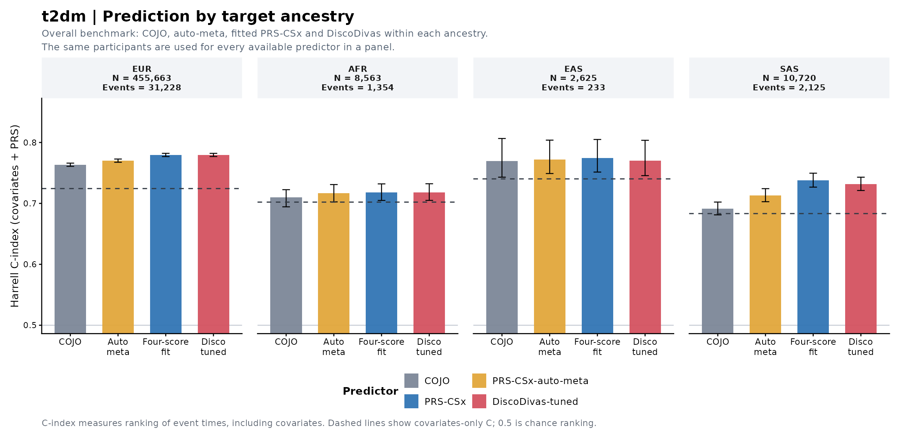
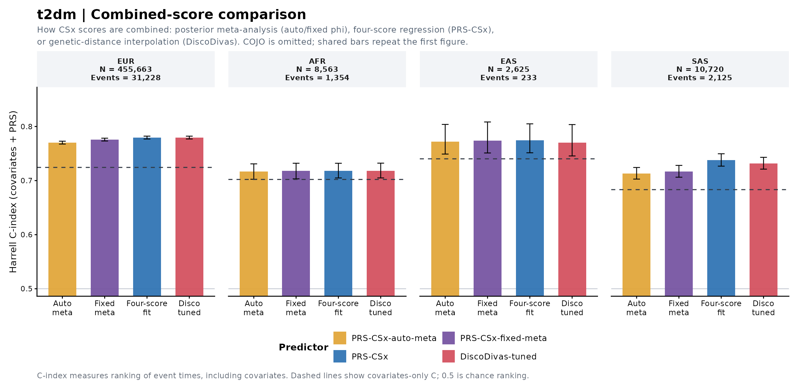
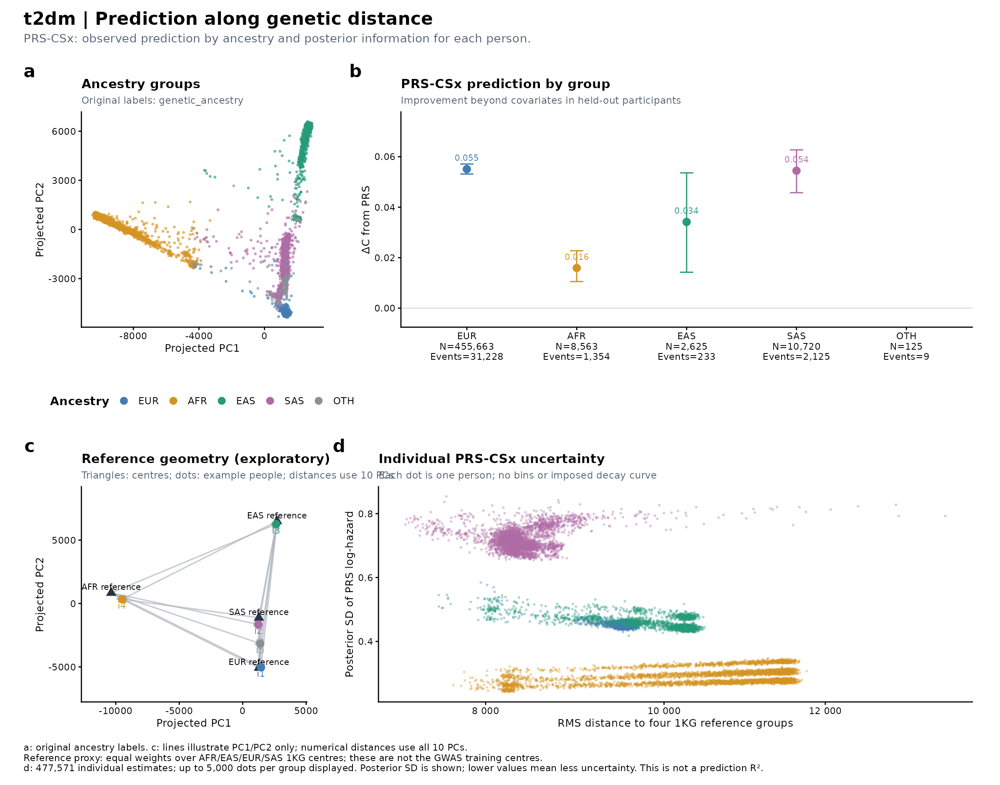
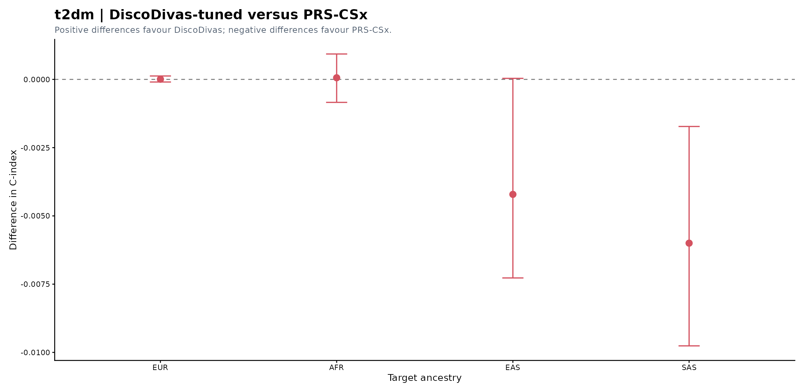
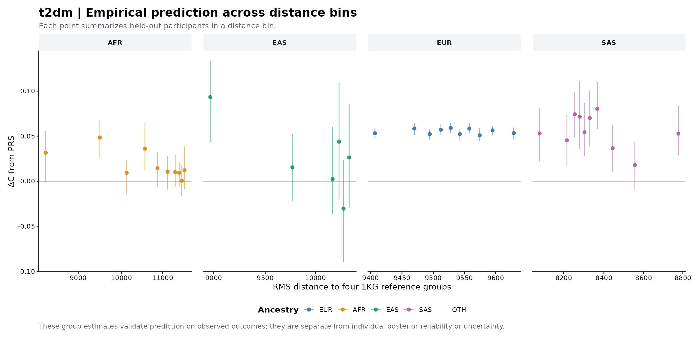

Outcome: t2dm.Yt2e t2dm.t2e · Covariates: age, sex, PC1, PC2, drug.dm, drug.htn · 5 held-out folds.
C-index measures discrimination of event times. The main comparison bars show covariates + PRS; panel b and empirical distance bins show ΔC from adding PRS. Posterior SD in d measures uncertainty of the individual PRS log-hazard contribution; there is no individual C-index.
Equal-weight four-reference distance. Reference centres were selected; this axis is a reference proxy and must not be called distance to GWAS training data.
Performance · Empirical bins · Methods
| Ancestry | N | Events | Full C | Covariates C | ΔC from PRS | ΔC 95% CI |
|---|---|---|---|---|---|---|
| EUR | 455,663 | 31,228 | 0.7794 | 0.7244 | 0.0551 | 0.0532–0.0571 |
| AFR | 8,563 | 1,354 | 0.7180 | 0.7021 | 0.0159 | 0.0105–0.0228 |
| EAS | 2,625 | 233 | 0.7744 | 0.7403 | 0.0342 | 0.0142–0.0536 |
| SAS | 10,720 | 2,125 | 0.7377 | 0.6833 | 0.0545 | 0.0457–0.0627 |





The paired-comparison workbook reports recoverable point estimates. The previous exporter did not retain its paired bootstrap intervals; the existing figure is preserved.
| method | estimate | lower95 | upper95 | N | events | K | P | baseline_C | baseline_C_lower95 | baseline_C_upper95 | delta_C | delta_C_lower95 | delta_C_upper95 | metric | target |
|---|---|---|---|---|---|---|---|---|---|---|---|---|---|---|---|
| COJO | 0.76337 | 0.76082 | 0.76610 | 455660 | 31228 | NA | 0.068533 | 0.72436 | 0.72163 | 0.72723 | 0.0390170 | 0.0372800 | 0.0407710 | OOF_Harrell_C | EUR |
| PRS-CSx-auto-meta | 0.77001 | 0.76755 | 0.77282 | 455660 | 31228 | NA | 0.068533 | 0.72436 | 0.72163 | 0.72723 | 0.0456490 | 0.0438260 | 0.0473950 | OOF_Harrell_C | EUR |
| PRS-CSx | 0.77945 | 0.77688 | 0.78218 | 455660 | 31228 | NA | 0.068533 | 0.72436 | 0.72163 | 0.72723 | 0.0550890 | 0.0531510 | 0.0571030 | OOF_Harrell_C | EUR |
| DiscoDivas-untuned | 0.77926 | 0.77679 | 0.78197 | 455660 | 31228 | NA | 0.068533 | 0.72436 | 0.72163 | 0.72723 | 0.0548990 | 0.0530090 | 0.0570060 | OOF_Harrell_C | EUR |
| PRS-CSx-fixed-meta | 0.77566 | 0.77321 | 0.77838 | 455660 | 31228 | NA | 0.068533 | 0.72436 | 0.72163 | 0.72723 | 0.0513010 | 0.0493940 | 0.0532690 | OOF_Harrell_C | EUR |
| DiscoDivas-tuned | 0.77945 | 0.77695 | 0.78215 | 455660 | 31228 | NA | 0.068533 | 0.72436 | 0.72163 | 0.72723 | 0.0550960 | 0.0531810 | 0.0571690 | OOF_Harrell_C | EUR |
| csx.AFR | 0.73488 | 0.73201 | 0.73769 | 455660 | 31228 | NA | 0.068533 | 0.72436 | 0.72163 | 0.72723 | 0.0105190 | 0.0096797 | 0.0114830 | OOF_Harrell_C | EUR |
| csx.EAS | 0.74982 | 0.74731 | 0.75253 | 455660 | 31228 | NA | 0.068533 | 0.72436 | 0.72163 | 0.72723 | 0.0254610 | 0.0239700 | 0.0270650 | OOF_Harrell_C | EUR |
| csx.EUR | 0.77948 | 0.77696 | 0.78222 | 455660 | 31228 | NA | 0.068533 | 0.72436 | 0.72163 | 0.72723 | 0.0551190 | 0.0531650 | 0.0571540 | OOF_Harrell_C | EUR |
| csx.SAS | 0.73798 | 0.73544 | 0.74037 | 455660 | 31228 | NA | 0.068533 | 0.72436 | 0.72163 | 0.72723 | 0.0136220 | 0.0126350 | 0.0145590 | OOF_Harrell_C | EUR |
| COJO | 0.70983 | 0.69439 | 0.72250 | 8563 | 1354 | NA | 0.158120 | 0.70211 | 0.68743 | 0.71379 | 0.0077187 | 0.0026114 | 0.0124110 | OOF_Harrell_C | AFR |
| PRS-CSx-auto-meta | 0.71683 | 0.70249 | 0.73094 | 8563 | 1354 | NA | 0.158120 | 0.70211 | 0.68743 | 0.71379 | 0.0147230 | 0.0091156 | 0.0210290 | OOF_Harrell_C | AFR |
| PRS-CSx | 0.71802 | 0.70488 | 0.73204 | 8563 | 1354 | NA | 0.158120 | 0.70211 | 0.68743 | 0.71379 | 0.0159180 | 0.0105380 | 0.0227610 | OOF_Harrell_C | AFR |
| DiscoDivas-untuned | 0.71151 | 0.69651 | 0.72454 | 8563 | 1354 | NA | 0.158120 | 0.70211 | 0.68743 | 0.71379 | 0.0094011 | 0.0043599 | 0.0135120 | OOF_Harrell_C | AFR |
| PRS-CSx-fixed-meta | 0.71800 | 0.70326 | 0.73208 | 8563 | 1354 | NA | 0.158120 | 0.70211 | 0.68743 | 0.71379 | 0.0158970 | 0.0101930 | 0.0227210 | OOF_Harrell_C | AFR |
| DiscoDivas-tuned | 0.71808 | 0.70494 | 0.73225 | 8563 | 1354 | NA | 0.158120 | 0.70211 | 0.68743 | 0.71379 | 0.0159770 | 0.0104870 | 0.0228450 | OOF_Harrell_C | AFR |
| csx.AFR | 0.70948 | 0.69494 | 0.72211 | 8563 | 1354 | NA | 0.158120 | 0.70211 | 0.68743 | 0.71379 | 0.0073724 | 0.0033648 | 0.0107350 | OOF_Harrell_C | AFR |
| csx.EAS | 0.70800 | 0.69341 | 0.72147 | 8563 | 1354 | NA | 0.158120 | 0.70211 | 0.68743 | 0.71379 | 0.0058955 | 0.0023222 | 0.0100560 | OOF_Harrell_C | AFR |
| csx.EUR | 0.71498 | 0.70153 | 0.72856 | 8563 | 1354 | NA | 0.158120 | 0.70211 | 0.68743 | 0.71379 | 0.0128740 | 0.0071920 | 0.0186560 | OOF_Harrell_C | AFR |
| csx.SAS | 0.70698 | 0.69404 | 0.71940 | 8563 | 1354 | NA | 0.158120 | 0.70211 | 0.68743 | 0.71379 | 0.0048729 | 0.0015790 | 0.0091651 | OOF_Harrell_C | AFR |
| COJO | 0.76939 | 0.74303 | 0.80656 | 2625 | 233 | NA | 0.088762 | 0.74025 | 0.71451 | 0.77592 | 0.0291410 | 0.0089319 | 0.0498460 | OOF_Harrell_C | EAS |
| PRS-CSx-auto-meta | 0.77220 | 0.74903 | 0.80384 | 2625 | 233 | NA | 0.088762 | 0.74025 | 0.71451 | 0.77592 | 0.0319510 | 0.0134910 | 0.0479540 | OOF_Harrell_C | EAS |
| PRS-CSx | 0.77442 | 0.75143 | 0.80492 | 2625 | 233 | NA | 0.088762 | 0.74025 | 0.71451 | 0.77592 | 0.0341670 | 0.0142260 | 0.0536040 | OOF_Harrell_C | EAS |
| DiscoDivas-untuned | 0.76978 | 0.74563 | 0.80226 | 2625 | 233 | NA | 0.088762 | 0.74025 | 0.71451 | 0.77592 | 0.0295250 | 0.0098760 | 0.0482820 | OOF_Harrell_C | EAS |
| PRS-CSx-fixed-meta | 0.77412 | 0.75105 | 0.80840 | 2625 | 233 | NA | 0.088762 | 0.74025 | 0.71451 | 0.77592 | 0.0338650 | 0.0160950 | 0.0508140 | OOF_Harrell_C | EAS |
| DiscoDivas-tuned | 0.77021 | 0.74556 | 0.80359 | 2625 | 233 | NA | 0.088762 | 0.74025 | 0.71451 | 0.77592 | 0.0299550 | 0.0113970 | 0.0505610 | OOF_Harrell_C | EAS |
| csx.AFR | 0.74741 | 0.71828 | 0.78402 | 2625 | 233 | NA | 0.088762 | 0.74025 | 0.71451 | 0.77592 | 0.0071593 | -0.0033763 | 0.0178100 | OOF_Harrell_C | EAS |
| csx.EAS | 0.77521 | 0.75178 | 0.80728 | 2625 | 233 | NA | 0.088762 | 0.74025 | 0.71451 | 0.77592 | 0.0349540 | 0.0143040 | 0.0565260 | OOF_Harrell_C | EAS |
| csx.EUR | 0.76678 | 0.74267 | 0.80346 | 2625 | 233 | NA | 0.088762 | 0.74025 | 0.71451 | 0.77592 | 0.0265310 | 0.0109100 | 0.0428410 | OOF_Harrell_C | EAS |
| csx.SAS | 0.74152 | 0.71558 | 0.77795 | 2625 | 233 | NA | 0.088762 | 0.74025 | 0.71451 | 0.77592 | 0.0012726 | -0.0107350 | 0.0150320 | OOF_Harrell_C | EAS |
| COJO | 0.69146 | 0.68120 | 0.70219 | 10720 | 2125 | NA | 0.198230 | 0.68328 | 0.67360 | 0.69489 | 0.0081758 | 0.0043409 | 0.0124160 | OOF_Harrell_C | SAS |
| PRS-CSx-auto-meta | 0.71314 | 0.70277 | 0.72422 | 10720 | 2125 | NA | 0.198230 | 0.68328 | 0.67360 | 0.69489 | 0.0298570 | 0.0232860 | 0.0361510 | OOF_Harrell_C | SAS |
| PRS-CSx | 0.73774 | 0.72671 | 0.74960 | 10720 | 2125 | NA | 0.198230 | 0.68328 | 0.67360 | 0.69489 | 0.0544580 | 0.0457470 | 0.0627120 | OOF_Harrell_C | SAS |
| DiscoDivas-untuned | 0.73345 | 0.72136 | 0.74553 | 10720 | 2125 | NA | 0.198230 | 0.68328 | 0.67360 | 0.69489 | 0.0501670 | 0.0413600 | 0.0577620 | OOF_Harrell_C | SAS |
| PRS-CSx-fixed-meta | 0.71677 | 0.70626 | 0.72808 | 10720 | 2125 | NA | 0.198230 | 0.68328 | 0.67360 | 0.69489 | 0.0334820 | 0.0267120 | 0.0400660 | OOF_Harrell_C | SAS |
| DiscoDivas-tuned | 0.73174 | 0.72118 | 0.74300 | 10720 | 2125 | NA | 0.198230 | 0.68328 | 0.67360 | 0.69489 | 0.0484590 | 0.0398950 | 0.0551710 | OOF_Harrell_C | SAS |
| csx.AFR | 0.68770 | 0.67697 | 0.69880 | 10720 | 2125 | NA | 0.198230 | 0.68328 | 0.67360 | 0.69489 | 0.0044127 | 0.0010437 | 0.0079782 | OOF_Harrell_C | SAS |
| csx.EAS | 0.70472 | 0.69397 | 0.71549 | 10720 | 2125 | NA | 0.198230 | 0.68328 | 0.67360 | 0.69489 | 0.0214360 | 0.0153670 | 0.0272200 | OOF_Harrell_C | SAS |
| csx.EUR | 0.70977 | 0.70074 | 0.72124 | 10720 | 2125 | NA | 0.198230 | 0.68328 | 0.67360 | 0.69489 | 0.0264880 | 0.0201840 | 0.0322490 | OOF_Harrell_C | SAS |
| csx.SAS | 0.73304 | 0.72188 | 0.74551 | 10720 | 2125 | NA | 0.198230 | 0.68328 | 0.67360 | 0.69489 | 0.0497580 | 0.0418200 | 0.0581100 | OOF_Harrell_C | SAS |
| target | method | reason |
|---|---|---|
| OTH | COJO | Missing score input or no ancestry-matched PT |
| OTH | ALL | Insufficient samples or cases/controls: 125 |
| method | scores |
|---|---|
| COJO | pt.TARGET |
| PRS-CSx-auto-meta | csx.auto |
| PRS-CSx | csx.AFR,csx.EAS,csx.EUR,csx.SAS |
| DiscoDivas-untuned | disco |
| PRS-CSx-fixed-meta | csx.meta |
| DiscoDivas-tuned | disco.cv |
| csx.AFR | csx.AFR |
| csx.EAS | csx.EAS |
| csx.EUR | csx.EUR |
| csx.SAS | csx.SAS |
# t2dm PRS evaluation Outcome: t2dm.Yt2e t2dm.t2e Covariates: age, sex, PC1, PC2, drug.dm, drug.htn Evaluation: 5-fold out-of-fold predictions; 200 paired subject bootstrap resamples ## Prediction metrics - Continuous: Prediction R² = cor(y - baseline_OOF, full_OOF - baseline_OOF)^2. This is covariate-adjusted squared prediction correlation. All residualization, score standardization and combination fitting use training folds. - OLS full_OOF - baseline_OOF equals the score-weighted, training-covariate-residualized score. No regression is fitted within a held-out distance bin. - Squared correlation does not assess calibration or direction. prediction_r, RMSE, full_R2, baseline_R2, delta_R2 and the former SSE_partial_R2 remain in Yeval.comparison.xlsx. - Binary: main metric is logistic AUC; baseline_AUC, delta_AUC, paired delta intervals and Brier are also saved. No unvalidated liability conversion is applied. - Survival: main benchmark is covariates + PRS Harrell C. Comparisons use within-fold comparable pairs. The ancestry and empirical distance panels show delta_C to isolate PRS increment. - These metrics follow common PRS reporting conventions but are not a numerical reproduction of any publication, because training data, covariates, splits and outcomes differ. ## Four panels - a: original ancestry labels in PC space. b: empirical group prediction (R² or delta discrimination). c: separate geometric illustration with four source centres and representative real people. d: one individual per posterior point. - The first bar chart is the overall method benchmark including COJO. The second isolates combined-score strategies, omits COJO and adds fixed-meta; repeated bars are identical. - The DiscoDivas difference chart follows the four-panel figure. Empirical bins are a separate validation figure after that. ## Posterior model and interpretation - All four population beta draws share a retained iteration within a chromosome. Individual score covariance includes SNP LD and all cross-population covariance terms. - Scores are centred at harmonized discovery EAF. Missing genotypes are mean-imputed at the same EAF. The posterior means replace the four old uncentred scores for fitting, so means, scales and covariance refer to one predictor. - Chromosome means and covariance matrices are summed under PRS-CSx chromosome independence. Independent chromosomes are not artificially coupled by matching iteration numbers. - With training-fold weights w = regression_coefficient / training_score_SD, individual prediction variance is w^T Sigma_i w. Both diagonal-only and cross-population contributions are saved. - If an external genetic variance Vg on the correct scale is supplied, model-based individual R² = 1 - w^T Sigma_i w / Vg. For a continuous phenotype, supplied residual SNP h² is multiplied by training-fold covariate-residual phenotype variance. - This stacked-CSx reliability is an exploratory extension conditional on fitted combination/covariate weights and the supplied Vg, not an established equivalence to LDpred2 reliability. It requires model calibration and compatible priors/scales. It is not empirical phenotype prediction R². - Negative model-based reliability is retained as a diagnostic of variance scaling, uncertainty or model mismatch. No clipping, artificial dots or forced decay is applied. - If genetic variance is absent, d reports posterior SD explicitly; it is uncertainty, not accuracy. For survival this is SD of the PRS log-hazard contribution; for binary outcomes SD of log-odds. Liability h² cannot be used in their place. - Bootstrap intervals condition on fixed OOF fits. Posterior covariance conditions on GWAS summary statistics, LD reference and fitted combination weights; neither accounts for all sources of model misspecification. ## Genetic distance Equal-weight four-reference distance. Reference centres were selected; this axis is a reference proxy and must not be called distance to GWAS training data. - Discovery centres must be means in the same PCA coordinate system, with source and pca_space identifiers. Multiple source groups use N_GWAS-weighted RMS distance, retaining distances to every group in the individual table. - A mixture centroid alone can conceal large distance from every actual training group. RMS distance avoids that cancellation, but is a descriptive extension, not a proven predictor of multi-ancestry accuracy. - Without discovery centres, a clearly labelled equal-weight four-reference proxy is used. It is not the former EUR-only distance and is never called a GWAS training distance. - At most 10 empirical quantile bins per ancestry; minimum 100 people, and for dt/t2e 20 events/cases plus non-events/controls. Sparse bins are not used to infer precise trends. ## References - PRS-CS: https://doi.org/10.1038/s41467-019-09718-5 - PRS-CSx: https://doi.org/10.1038/s41588-022-01054-7 - Individual accuracy: https://doi.org/10.1038/s41586-023-06079-4 - Source method: https://github.com/yidingdd/individual-pgs-accuracy/tree/main/pgs-accuracy